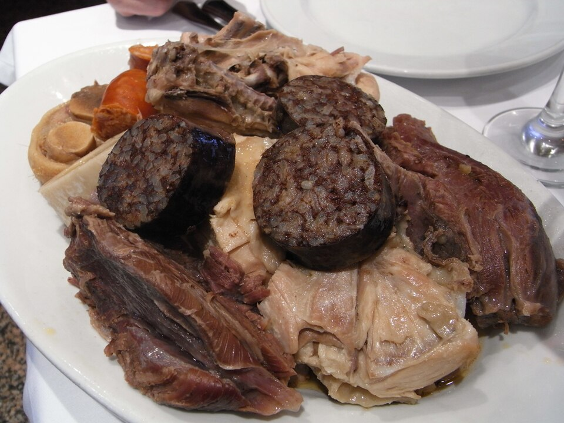

Carnes · Outros
Cozido à espanhola

Ingredientes
- 500 g de grão-de-bico
- 1 kg de chouriço tipo espanhol
- 250 g de toucinho defumado
- 1 ou 2 paios
- 1 colher (sopa) de sal
- 1 kg de ponta-de-agulha
- 1 kg de músculo
- 1 kg de frango
- 2 ou 3 cenouras
- 8 a 10 batatas
- 6 a 8 batatas-doces
- 1 repolho
- 6 a 8 cebolas
- 1 ou 2 nabos
- 3 colheres (sopa) de azeite de oliva
- 1 cebola picada
- 1/2 colher (sopa) de colorau
- sal a gosto
Modo de preparo
- Na véspera, deixe o grão-de-bico de molho em 2 litros de água.
- No dia seguinte, cozinhe o grão-de-bico na água do molho até ficar macio.
- Numa panela, cozinhe o chouriço, o toucinho e o paio cobertos com água por 2 horas. Reserve.
- Noutra panela grande, ferva 3 litros de água com o sal. Acrescente as carnes de boi em pedaços grandes e cozinhe 1 hora.
- Acrescente o frango em pedaços e cozinhe mais 1 hora.
- Transfira chouriço, toucinho e paio para a panela das carnes.
- Junte cenouras, batatas, repolho em quatro, cebolas e nabos; cozinhe até ficarem macios.
- Prepare o tempero: aqueça o azeite, refogue a cebola picada com colorau e sal até a cebola ficar transparente. Reserve.
- À medida que carnes e legumes cozinharem, retire para travessas e deixe esfriar. Reserve o grão-de-bico à parte.
- Junte o tempero à água do cozido. Deixe esfriar e congele.
Observação
Ensopados também podem congelar forrando recipiente rígido com saco plástico, congelando em aberto e depois vedando o saco. Congelamento: carnes, legumes e grão-de-bico em sacos separados; caldo em recipiente rígido. Descongelamento: na geladeira; aqueça carnes e legumes no forno; caldo em fogo brando.